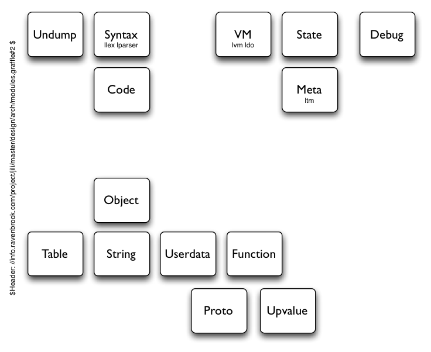

Ravenbrook / projects / Java Implementation of Lua for Intuwave
This documents describe the design of Jili at a high level.
This is a draft docoument.
The readership of this document is anyone interested in the Jili project.
A key design principle is to follow the PUC-Rio design closely. This reduces time spent making design choices and uses a design that is known to work well for implementing Lua.
Because Jili must operate in constrained devices, designs that minimise
superfluous classes have been preferred. This is in order to reduce the
size of any .jar file incorporating Jili.
The key modules are identified diagrammatically:
The diagram is arranged so that generally modules make use of services, and instantiate objects implemented by, modules lower down.
The extent to which these modules correspond to classes is yet to be defined. For example since Code (code generation) and Syntax (lexing and parsing) are used as a single process when compiling it seems likely that the functionality provided by these modules will be implemented in the same Java class.
The modules are arranged in clusters:
Executable code is injected into the Jili system from two sources:
compilation from lua source and loading precompiled binaries. Both of
these occur in the Lua.load method. The Generation cluster is
responsible for these activities. Generally the results of compilation
(or equivalently, undumping binary chunks) are a single function (one
per script) which generally will reference many constants, strings,
numbers, and other functions. All of these objects are created using
the lower level Representation cluster. The Syntax and Code modules
create code from Lua source, the Undump module creates code from a
compiled binary representation. The compiled binary representation will
be the same as the PUC-Rio implementation; this has the benefit that
binaries can be compiled offline (not on the target) and loaded on the
target, meaning that the compiler (Syntax and Code) need not be working
in order to test the remaining parts of the system.
The Execution cluster is responsible for executing Lua code. All Lua
code that is to be executed is in an internal binary form (clusters of
LuaFunction objects). All execution begins by some Java code calling
the call method or the resume method (for coroutine resumption) of a Lua
state object.
Execution proceeds by the VM interpreting the VM
instructions of the function. When control transfers to another Lua
function then the VM suspends its internal state in an internal stack
and begins interpreting VM instructions for the newly called function.
Note that the VM, under most circumstances, will not invoke itself to
execution a called Lua function, thus the Lua stack will not be modelled
by the Java stack; this is essential in order to implement coroutines.
Execution of VM instructions is suspended when Lua calls a function
implemented in Java; when that function returns to the VM then the VM
will resume execution of VM instructions. If the called Java function
requests a yield, which it will do with code similar to "return
L.yield(n)", then the VM will remain suspended and return to its caller
(the Java code that originally invoked Lua.call).
Representation specifies how Lua values are modelled in terms of Java objects and values. Classes in this cluster will specify the layout, in terms of Java objects, of Lua values and define the primitive operations on these values. This is a large part of the design and its details have implications throughout the system. See Object Model, below.
The Debug cluster (module really) provides two services in Jili: the interface to Lua's debug hooks (which is in reality likely to be a method on the Lua state object); and, mapping of the compiled form of Lua functions to source code (file, line number, variable name).
An encapsulated Lua execution environment is represented by the class
Lua.
In order to minimise superfluous classes this class is likely to
implement a large number of methods. This class will be the analogue of
PUC-Rio's lua_State object. Like PUC-Rio's implementation
it will be possible to have completely independent Lua execution
environments by creating multiple instances of Lua.
Generally a value in Lua will be represented by an object (which
possibly references further internal implementation objects) in Java.
Java programmers using Jili will be able to store Lua values wherever
they like, they will not be restricted to storing them only within other
Lua objects (such as tables). The JVM's GC will be used to implicitly
collect Lua objects. This means that provision of weakness (the
__mode field of metatables, see LRM Weak
Tables) and finalisation (the __gc field, see LRM Garbage-Collection
Metamethods) are subject to
the implementation of equivalent facilities in the JVM.
A Lua value supports many generic operations. These will be represented in Jili by methods (on the Lua state object). The following monadic operations are identified (whose names are all taken from the equivalent functions from PUC-Rio's C API, eg lua_call, lua_getfield, etc): call, getfenv, getfield, getmetatable, isboolean, isfunction, islightuserdata, isnil, isnumber, isstring, istable, isthread, isuserdata, objlen, setfenv, setfield, setmetatable, toboolean, tointeger, tonumber, topointer, tostring, tothread, touserdata, type.
PUC-Rio's lua_iscfunction and lua_tocfunction
will have equivalents for Lua Java functions.
The following operations receive more than one value (operand): concat, equal, lessthan, rawequal.
Lua's nil is represented by Java's null (but
see below for discusion).
Lua's boolean is represented by Java's
java.lang.Boolean.
Lua numbers shall be represented by Java's java.lang.Double class.
Lua strings shall be represented by Java's java.lang.String class.
The upshot of representing nil, boolean, strings, and numbers by their
"obvious" counterparts in Java is that we do not need to implement a new
class for each type. This saves space in the .jar file, is
likely to be faster (less boxing and unboxing to perform), and is more
natural for Java programmers writing Jili extensions. A
consequence is that the basic operations on Lua types (see above) cannot
be represented by instance methods since Java provides no way for us to
add an instance method to someone else's class, such as
java.lang.String. That's why all the basic operations are
methods on the Lua class.
An alternative approach, where all Lua values were represented by an
(indirect) instance of a particular class, LuaValue, was
considered, but rejected because of the extra classes it would introduce
(bloating the .jar file)
and because it leads to less natural code for the Java programmer, who would
have to constantly create Java strings from Lua strings, convert Java
doubles to Lua numbers and so forth.
Representing nil by null has two problems.
The first problem is that it may be confusing to
Java programmers; null can creep into places accidentally
and therefore may get passed into Lua unintentionally.
The second
problem is that in Lua 5.1 nil is a valid table index (for
lookups) and java.util.Hashtable raises a
NullPointerException for null keys.
Because of this we may move to a non-null representation
for nil.
A function implemented in Lua is represented by the class
LuaFunction.
A function implemented in Java is represented by (an instance of a
subclass of) the class LuaJavaCallback. The embedder of
Lua will create Lua Java functions by subclassing
LuaJavaCallback and instantiating it.
A function (closure) corresponds to some code, some closed over
variables (variables that are used in an inner function but are defined
in an outer function) which Lua calls upvalues, and an
environment (by default a function's environment is the same as
the environment of the function in which it is defined;
it is usually the global table, see
LRM 2.9 -
Environments).
The code is represented in the PUC-Rio source by a Proto
struct which is quite large; it contains a block of VM instructions, an
array of constants, an array of functions defined therein (actually an
array of pointers to Proto structs), the number of upvalues
used, the number of formal parameters, and some vararg information.
An upvalue is a reference to a variable defined in an enclosing
function. They are represented internally in the PUC-Rio code by the
UpVal type.
PUC-Rio uses an optimised representation by which the value
is kept on the VM stack until the enclosing function returns. In
returning, the enclosing function destroys its stack activation frame
and copies all stack values (that are about to be destroyed)
that are referred to by UpVals into the UpVal
struct. This operation is referred to as closing the upvalue; upvalues
that reference values that are still on the stack are open.
In PUC-Rio the enclosing function, that defines a variable that
is used by an inner function, has full-speed access to all its
variables; the inner function pays only a slight penalty (an extra
pointer indirection). There is some housekeeping to do when a function
returns, but this is only necessary if its inner functions use upvalues.
(In PUC-Rio Lua) Upvalues are bound with a closure when the
OP_CLOSURE VM instruction is executed. Each element in the
closure's upvals array is either a reference to an upvalue of
the enclosing function (that is, the variable in question in defined in
a function at least 2 levels "up" and is used by inner functions at
different levels) which has already been created, or is a reference to
an upvalue for a variable in the directly enclosing function (the
function being executed when the OP_CLOSURE instruction is
executed). In the latter case the upvalue may already exist, if another
closure defined in this function needed it, or may need creating. The
luaF_findupval does the job of searching for an
UpVal or creating one if necessary.
Keeping the same approach imposes the following design requirements on Jili's upvalue mechanism:
OP_RET is executed
(that is, whether there are any upvalues that need closing).
OP_GETUPVAL
instruction requires the same access)
The optimised approach to upvalues, used by the PUC-Rio implementation,
is not directly possible in Java
since we cannot reference the interior of an array directly. Jili's
UpVal will reference a value via an array and an offset.
An open upvalue will reference the VM stack array and use the
appropriate offset; a closed upvalue will reference a freshly allocated
1-element array and use an offset of 0. Thus accessing an upvalue (from
an inner function) will cost an extra array access (and two member
accesses).
Illustration of UpVal representation when open and
closed.
An alternative to this approach is to have the VM stack not reference values directly, but indirectly via a binding cell (which could be a 1-element array for example). Upvalues could reference the same binding cell. No housekeeping is necessary. The extra indirection (via the binding cell) for all stack access is judged to be too slow. So we reject this approach.
The set of open upvalues is accesssed in a near stack-like manner.
New upvalues are created by the OP_RET or OP_CLOSE)
when the function returns. Thus the access is near stack-like, new
upvalues are created within a set of upvalues confined to the current
function, and all the upvalues of a function are removed together.
PUC-Rio uses a linked list to manage the set of open upvalues. The list
is kept in order of stack slot position (top-most stack slot comes
earliest in the list). In Jili
java.util.Stack could be a reasonable
choice. Examining the Stack class however,
we won't be using pop, as a single
setSize at the end of a close operation is likely to be
faster, and search is equally performed by
lastIndexOf. The other methods of
java.util.Stack are worthless. So we may as well use its
superclass java.util.Vector.
Of course we could, as in PUC-Rio, use a list-like structure but CLDC
has no list-like class so we would be forced to implement our own.
Tedious and pointless. java.util.Hashtable is rejected
because it performs poorly for the Close requirement (it
would be O(n) time in the number of stack slots being destroyed as
opposed to the PUC-Rio implementation which is O(n) time in the number
of upvalues that require closing), and although it performs well for the
other requirements Jili will emphasise Close because PUC-Rio
does.
The code for functions that are implemented in Java, "Lua Java Functions",
is represented by an instance of the abstract class
LuaJavaCallback. An abstract class
is preferred over an interface because method invocation is a shorter
JVM bytecode sequence.
public abstract class LuaJavaCallback {
abstract int luaFunction(Lua L);
}
Generally we expect that the embedder of Lua will subclass
LuaJavaCallback and create an instance for each Lua Java
Function. The implementation of a subclass's luaFunction
method will need to distinguish between its instances (each instance
represents a different Lua function such as string.reverse
or string.match). There are several strategies for this:
extend the class with an instance member (an int say) that
will be different for each instance and can be used to determine which
function is intended; store each instance in a static member and use
these to compare against; make each instance be the sole instance of
a (possibly anonymous) subclass each of which implements
luaFunction, Java method invocation will invoke the
correct method. Of these three the former (a discriminating instance
member) is preferred. For JME environments the latter approach of
having a separate class for each instance (each Lua Java Function) is
not recommended as it will lead to .jar bloat. The
libraries provided with Jili use the former approach; the instance
member is called "which".
Lua Tables will be represented by the class LuaTable,
which will largely
rely on the services of java.util.Hashtable (which thankfully
exists in
CLDC 1.0) to do the heavy lifting. It's likely that we can implement
LuaTable as a subclass of java.util.Hashtable
(smaller and faster than alternatives).
The services beyond those provided
by java.util.Hashtable are: metatable, non-raw access (ie a getfield
which goes via the metatable if there is one), length (non-obvious
semantics, see LRM: The Length
Operator), callable (metatable), concatable (metatable), comparable
(metatable). All of these operations will be invoked by the Java
programming using methods from the LuaValue class; recall
that this is necessary because in Lua all values support most operations.
Note that we are relying on the underlying table support providing by
java.util.Hashtable. This may have different performance
from the PUC-Rio C implementation of hash tables. For example, Lua's
pairs function from the base library will be implemented
using the java.util.Enumeration returned from the
Hashtable's keys method, so this will be
reasonably efficient. The next function, also in the base
library but less commonly used, is not supported efficiently by
java.util.Hashtable so its implementation in Jili will be
less efficient.
Also likely to have an impact on the performance of tables is the hash
function, which in Java is distributed amongst the classes whose objects
will be added to the table. Since we are representing many Lua values
directly by corresponding Java objects, we will have no control over the
hash function (which for most of the types we will be using is in fact
specified by the Java platform. EG java.lang.String).
The semantics of the Java equals method affects how objects
are keyed into a table. If two Java objects are .equals
then they cannot both be added to a Hashtable. This is a
concern when adding tables to tables. In Lua each new table is a new
object and value, no two tables compare equal and when adding a table to
a table it will never clash with an existing key. In JSE
java.util.Hashtable implements equals such
that tables are compared by the value of their contents when considering
equality. Two Hashtables are equal if the mappings they
implement are equal. In JME (CLDC) java.util.Hashtable
does not implement equals, so inherits the most
discriminating equals method from Object. The
upshot is that Jili's LuaTable class must implement
equals in JSE if it is to get the correct Lua table
semantics, but need not do this in JME.
In PUC-Rio Lua a userdata exists to create Lua values that reference
C types, either directly or via an additional pointer. The
corresponding facility in Jili allows Lua values that reference
arbitrary Java objects and includes a per-object metatable. It is a
simple class with a metatable member and an Object member.
As in PUC-Rio Lua, Jili will represent a coroutine (or thread) by a Lua state object that shares a global environment with its parent coroutine. Note that whilst coroutines share global environments they do not share VM execution states so they represent independent threads of execution.
The VM is responsible for executing Lua code after it has been
compiled into VM instructions. The format is identical to the PUC-Rio
version of Lua: Each instruction is a
32-bit quantity, which is represented by Java's 32-bit int
type.
The activities of the VM can be divided up as follows:
OP_LOADK.OP_ADD.
Within the execution of a single function the VM opcodes can access: the
"global" table (this is actually the environment table of the currently
active function), a number of constants (stored in the
Proto object of the currently active function),
a fixed number of stack slots (locals and temporaries), a number of
upvalues (the upvalues accessible to a function are indexed via an array
stored in the Proto object for that function).
The stack slots available to a function activation are fixed in number, determined when the function is compiled. The stack slots are arranged in a stack: when a (Lua) function is called the actual arguments are top-most stack slots of the calling function, and they become the bottom-most stack slots of the called function. The stack slots that are available to a called function are the ones that are used for its arguments followed by a fixed number of stack slots for its locals and temporaries. Each function activation gets a private set of stack slots to work with. The range of stack slots available to an activation is typically denoted by (base, top), where base is the smallest index available to the function, and top is one more than the greatest index available to the function (this follows the analogous pointer convention used in the PUC-Rio implementation).
Thus when a function is called the following information needs to be retained in order to restore the stack when the called function eventually returns:
This data forms the continuation when a function is called. Note that much of the information that is used for VM execution, the environment table, the upvalue array, the constant array, is retrievable using just the function object, so that is all we need to store.
In order to avoid needless copying of arguments when a function is
called, the continuation data is stored in a separate stack of
CallInfo records. The alternative, which is to store the
continuation on the regular VM stack would mean that when f
calls g the arguments would have to be copied from f's
stack frame to g's stack frame.
Principal VM objects, for when Lua function f calls g.
Note in the diagram that g's stack frame overlaps with f's stack frame. When f calls g the arguments that f has pushed onto the stack become the bottom-most elements of g's stack frame (a bit like sliding register windows in some RISC CPU architectures).
There is a small cheat in the diagram. The CallInfo record
for the current function, the top-most record, is not completely filled
in during the execution of g; it's only filled in when g calls another
function. So the diagram represents a point in the execution where g is
about to call another function, but no stack nor CallInfo
record has been allocation for the callee.
Coroutines are represented by a separate Lua instance that
share some global state with its parent (global table, registry,
metamethods for string, nil, functions, etc). Execution of coroutines
thus proceeds in a completely natural fashion, two coroutines provided
separate execution environments and do not interfere with each other.
Intuwave have an additional yielding requirement related to their
co-operative task implementation. The requirement on Jili is that a Lua
Java function can yield the coroutine that called it by throwing an
Exception. In such a circumstance Jili will catch the
exception, arrange the Lua state so that the coroutine is effectively
yielded (as if the Lua Java Function did a return
L.yield(0)), and then rethrow the exception (or behaviour
equivalent to this).
An error in a Lua program results in a transfer of control to the
invoking Java code (unless pcall, or similar, from the base
library has been used within Lua, but it uses the same mechanism).
The transfer of control is done using an Exception in Java.
A subclass of Exception, LuaError, is created
to store the extra Lua errorStatus values which needs to
get passed from the point where the error is generated to the catching
code (pcall).
When an error is caught, the following VM state is restored:
The Jili compiler will closely follow the PUC-Rio compiler. This is organised as a hand-coded lexer (not table-driven), and a hand-coded recursive descent parser with table-driven operator-precedence parsing for binary and unary expressions. Code generation happens as the program is parsed, thus there are very few explicit structures to represent the syntax or the parse (the representation of the parse is implicit in the call-stack). For example, as an expression is parsed, code to evaluate that expression is generated (and emitted into the code stream) and the compilation result is a register (that is, the index of a VM runtime register) which is available for enclosing expressions to make use of.
BinOpr and UnOpr in PUC-Rio are an enumeration
of binary and unary operators. They are used for two purposes. The
first is that they are used to communicate between the parser and the
code generator, as to which code needs to be generated. The second is
that they are used in the operator precedence parser to index into a
table of precedence values. In Jili these two enum types become
int.
The operator priority table (for operator precedence
parsing) uses an anonymous two-element struct in PUC-Rio (for left- and
right- priority). In Jili this is replaced with a 2-element array,
where [0] is the left-priority and [1] is the
right-priority. Thus the table of priorities is an int[][]
(if Java were able to express such a thing it would be
int[][2]).
Code generation routines, in lcode.c in PUC-Rio, are
methods on the FuncState object.
Most of the lexical analysis and parsing routines are in the
Syntax class. This class effectively replaces
LexState from the PUC-Rio implementation and implements
code that is in the PUC-Rio files "llex.c" and "lparser.c".
expdesc becomes the Expdesc class and is used
in quite an unconventional way (for a Java class). Its use follows the
way the expdesc struct is used. A blank instance is
created at the beginning of an expression parse, and filled in as the
parse goes along (and sometimes modifed as well).
| [LRM] | Lua 5.1 Reference Manual; Roberto Ierusalimschy, Luiz Henrique de Figueiredo, Waldemar Celes; <URL: http://www.lua.org/manual/5.1/manual.html" >; 2006 |
| 2006-04-26 | DRJ | Created. |
| 2006-05-15 | DRJ | Extended for upvalues. |
| 2006-05-16 | DRJ | VM and stack diagram. |
| 2006-08-02 | DRJ | Tidied up and brought more up to date. |
Copyright © 2006 Ravenbrook Limited. Intuwave Client Confidential.